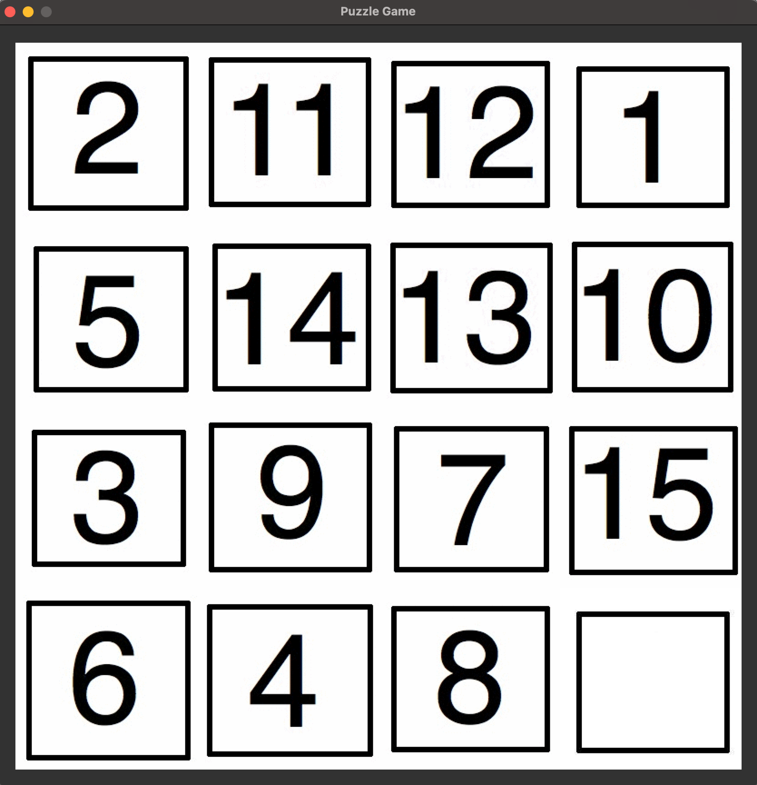
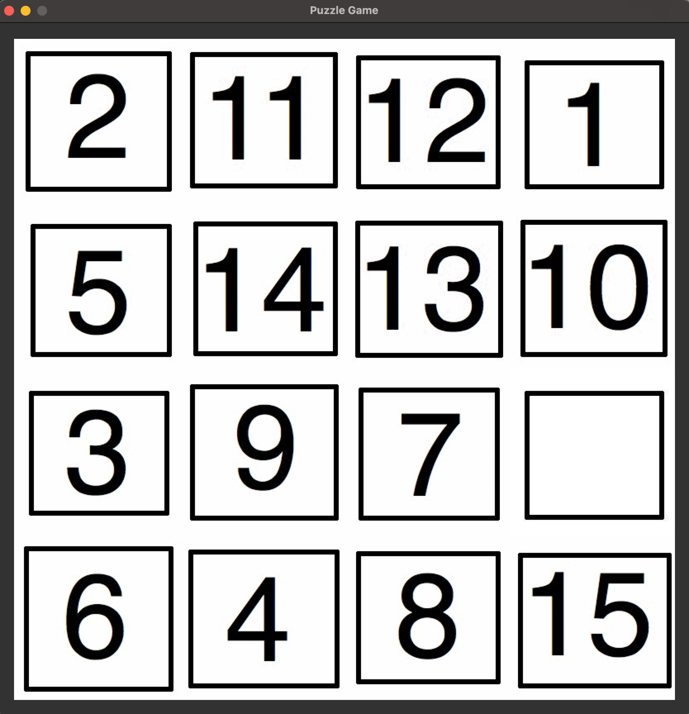
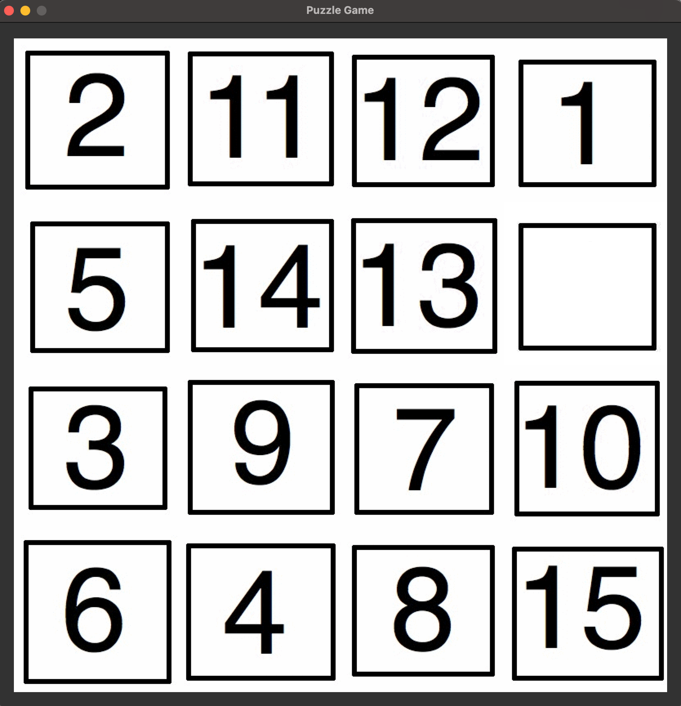
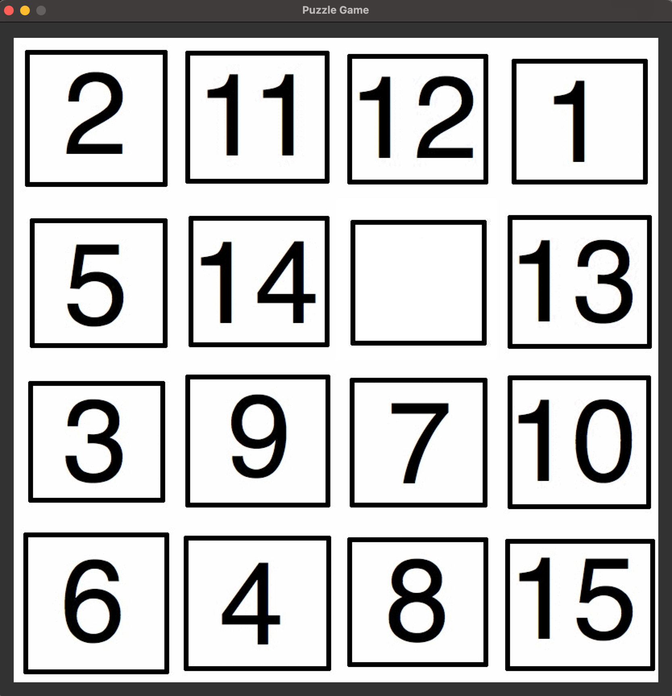
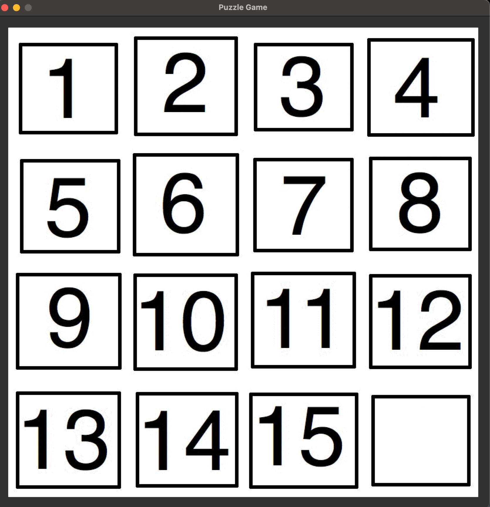
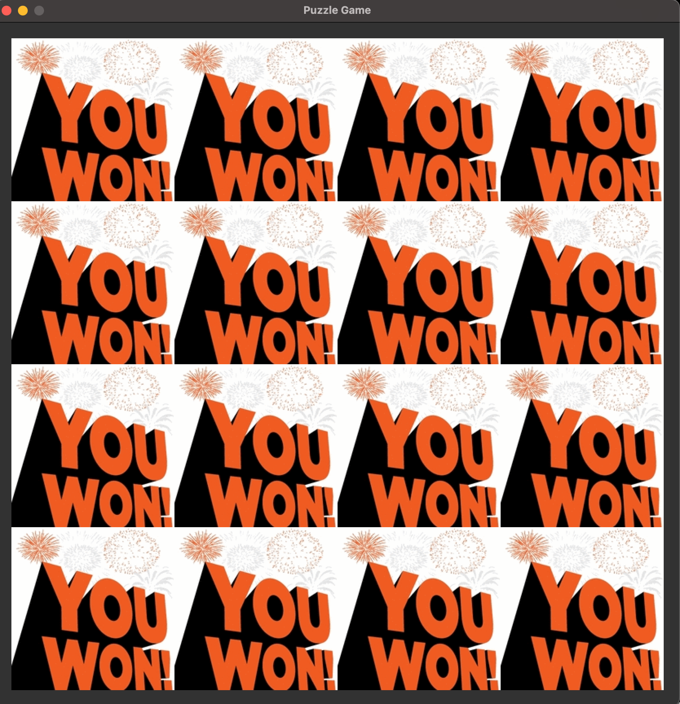

Programming Assignment 1 (Fifteen Puzzle)
Write a Python program for the "fifteen" puzzle (Wikipedia page) on a canvas of size 840x840 pixels. You will use the graphics.py package to implement the puzzle. The package can be installed using the command:
$ pip3 install graphics.py or $ pip install graphics.pyThe documentation for this package is available at
graphics.html (or graphics.pdf - this contains Image object).
Upon running the program on the terminal:
$ python3 Fifteen.pya pop-up window should open up that displays the initial configuration of the puzzle. Here is an example of the initial configuration:

The initial configuration willl be obtained by using a random-number generator, resulting in a different configuration each time you run the program.
You will need 17 different image files (gifs) for this project. Please download these files using the .zip version.
The user interacts with the window by clicking on a tile. Clicking a tile neighboring the blank tile should swap the two tiles, thereby moving the non-blank tile into the spot occupied by the blank tile. Clicking a tile not neighboring the blank tile should do nothing. Here are snapshots of the window shown after each of the first 3 clicks:
  
The user solves the puzzle by clicking away until the following final configuration is achieved:

As soon as the user solves the puzzle, the window should be transformed to the following using the win.gif file:

A click on the "You Won" window should terminate the program.
Folder structure for your project:
$ ls Fifteen.py gifs ASCSC1PP629W1:Puzzle raj$ ls gifs 1.gif 12.gif 15.gif 4.gif 7.gif blank.gif 10.gif 13.gif 2.gif 5.gif 8.gif win.gif 11.gif 14.gif 3.gif 6.gif 9.gif $You can zip/tar all the files for the project by using the following command on the Terminal on MacOS or Linux:
$ zip -r fifteen.zip * $ tar cvf fifteen.tar *If you are on Windows, please figure this out yourself (-:
What to submit?
fifteen.zip, a zip file containing Fifteen.py and the 17 gif files used in the program. The 17 gif files should be inside a subfolder called gifs.